aRESTING
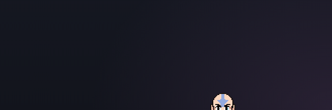
Just his forehead and eyes at the bottom edge, as on the PC.
The Mac is Aang's home now. This is how he lives on it: where he sits, how he talks, when he keeps quiet, and how he hands over to the PC.
Every Aang on this sheet is the real bubble, chat box and menu, drawn by the app itself, at his real size. The Mac around him is plain on purpose.
Docked at the bottom like on the PC. You can still drag him anywhere and he docks to that edge.

Just his forehead and eyes at the bottom edge, as on the PC.
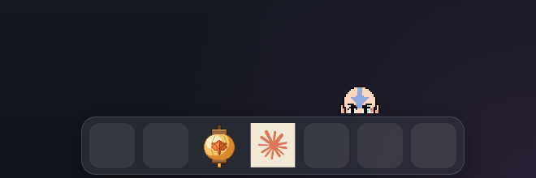
He rides up on top of it. He never covers your apps and never vanishes.
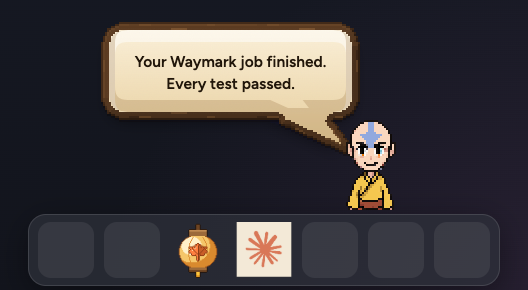
He slides up a little and talks, still on top of the Dock.
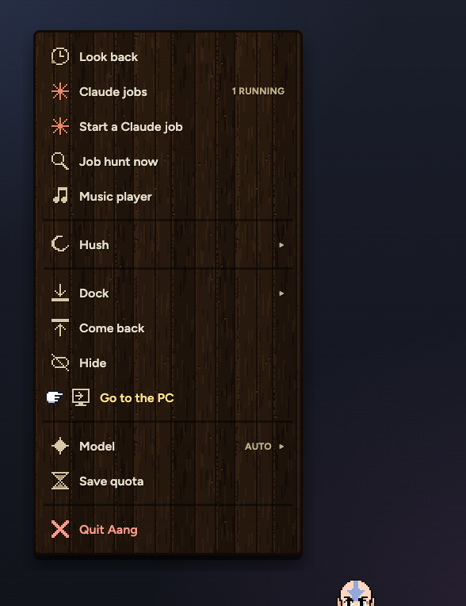
His menu as you picked it (sheet 56), plus Go to the PC. On the PC it reads Go to the Mac.
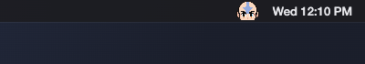
A little Aang beside the clock. It's his real head at his own pixel size, not a redraw.
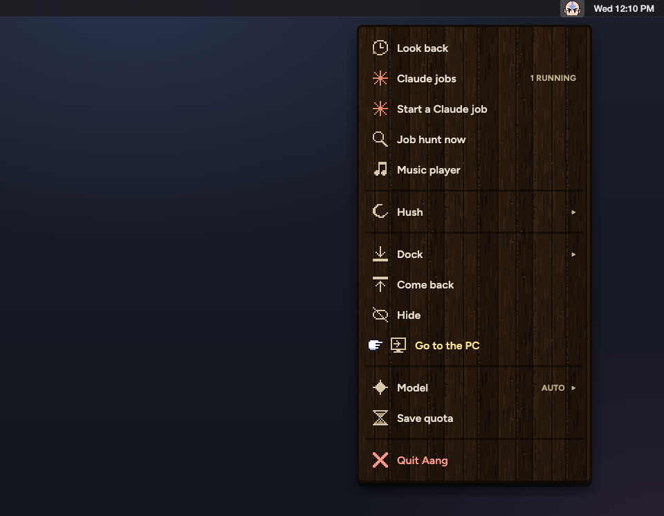
Click it: the same menu as right-clicking him. Handy when he's hidden.
The bubble, keys, Claude's jobs and the chat box are exactly what you approved for the PC.
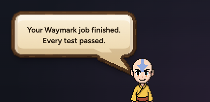
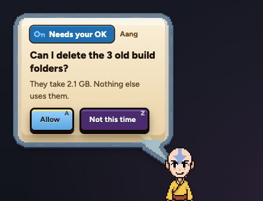
Keys show after your pointer rests on the bubble (sheet 64).
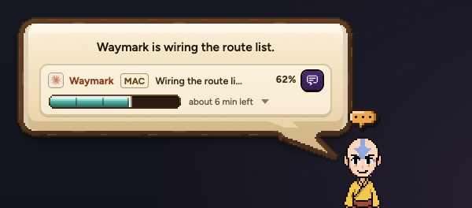
The job's bar, with MAC on it. His working mark over his head.
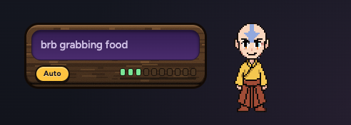
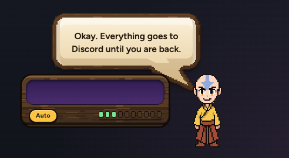
Built and live already. Instant, no Claude used. Your first touch of the Mac brings him back.
On a call, in a full-screen video, or with the Shadow window in front, only his mark shows. No line, no sound. What came up waits.
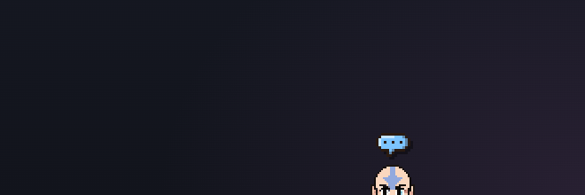
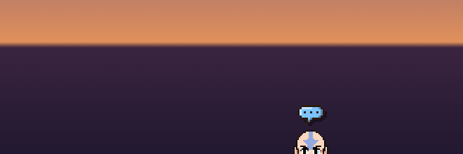
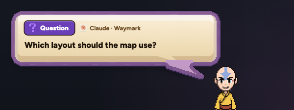
What was held comes out, kept whole: Claude's question with its tag, colour and door to the session.
The Mac tells Aang about calls (mic or camera in use), full screen and the Shadow window. That part is built and live. Focus mode counts too if you give his brain Full Disk Access (your switch).
One brain, two Aangs, one conversation. Only the one where you are shows.

The Mac's Aang at the bottom. Shadow is just a window.
The Mac's Aang tucks into the edge. The PC's Aang peeks out over the Windows taskbar, in the same conversation.
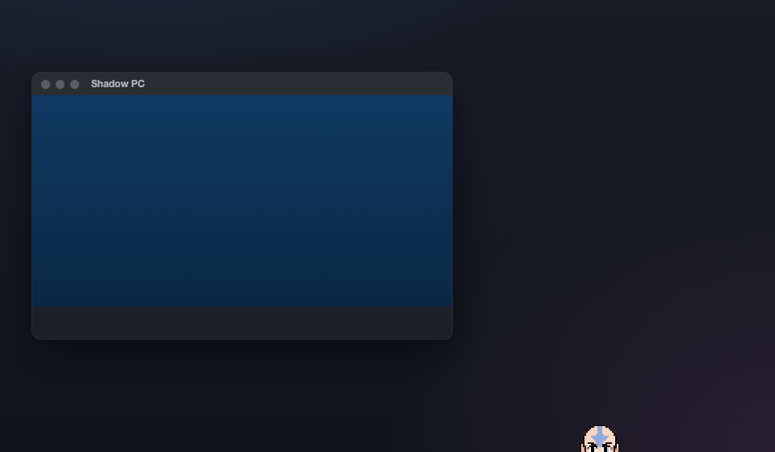
He's back at the bottom. Nothing to say, so he just peeks.